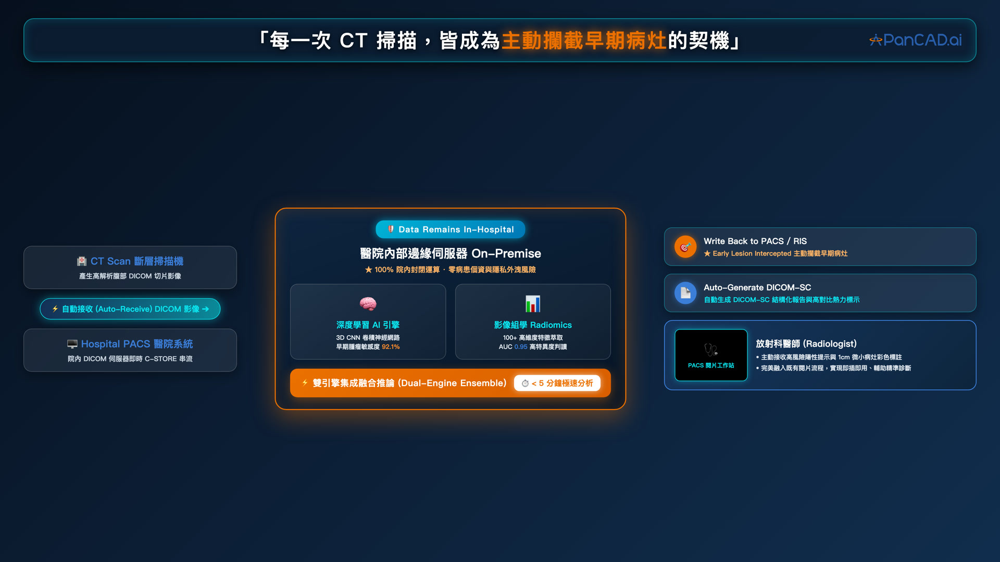
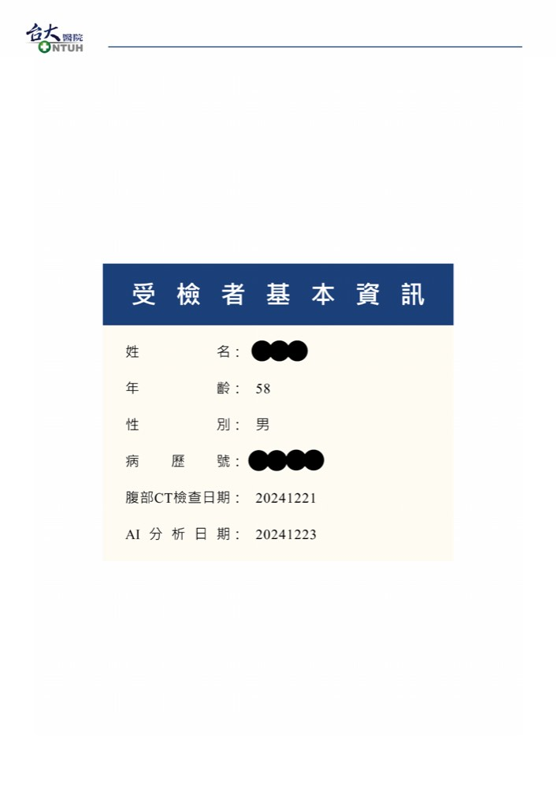
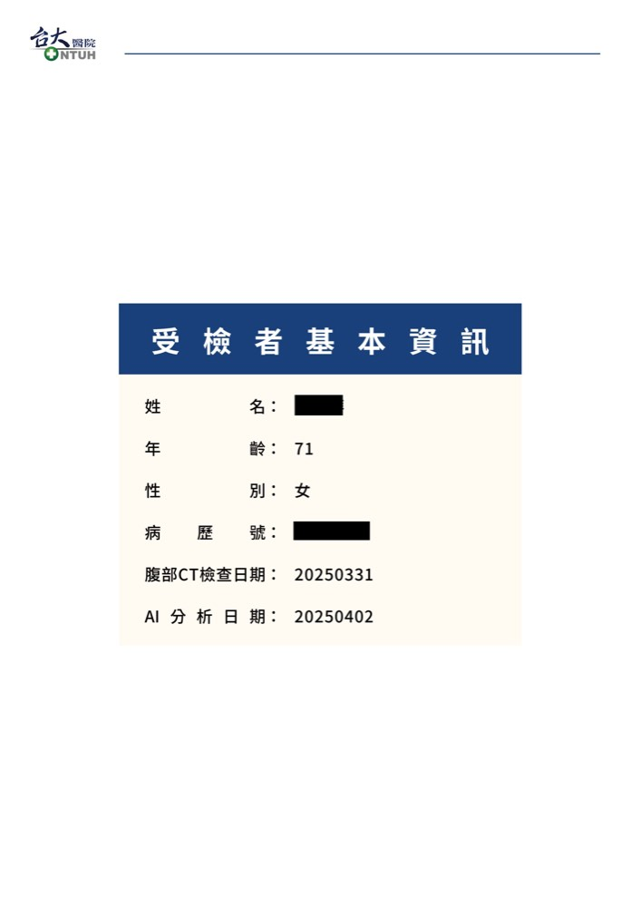

真實系統
第一線的真實操作畫面
這是 PANCREASaver 在院內 PACS 工作站的實際操作畫面。

PANCREASaver® 於 PACS 工作站之操作畫面
全球首創之全自動化胰臟癌 CT AI 輔助偵測系統——結合深度學習與影像組學雙引擎，於 CT 掃描當下即時判讀，主動攔截小於 2 公分的早期病灶。
不只是分析影像——系統會在判讀完成的瞬間，主動觸發警示、標記病灶、優先載入高風險影像並產出結構化報告。
腹部 CT 檢查完成，影像即時串流
雙引擎自動分析，數分鐘完成
異常病灶觸發警示並標記位置
放射科醫師確認後產出正式報告
這是 PANCREASaver 在院內 PACS 工作站的實際操作畫面。
從 DICOM 影像來源到 PACS 工作站，完整閉環的自動化流程。

陽性與陰性報告範本——讓受檢者一眼看懂結果與建議。

